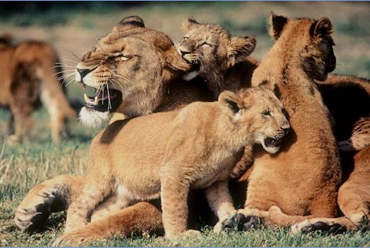
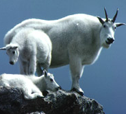
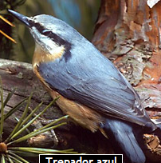

|
|
 En el suelo, en el agua o en el aire hay millones de seres vivos ¡Mira a tu alrededor! ¿Sabrías distinguir qué es lo que está vivo? ¿En qué se diferencia un ser vivo del que no lo es? El ser humano, los animales, las plantas y muchos otros organismos que nuestros ojos no pueden ver tienen vida. ¿Por qué decimos que están vivos?
 Los científicos piensan que hace unos 3.800 millones de años surgieron las primeras formas de vida en la Tierra. Se cree que los primeros seres vivos habitaron en el agua de los océanos. Eran organismos muy pequeños y diferentes a la gran mayoría de los que ahora pueblan nuestro mundo.
 ¿Has pensado alguna vez qué necesitas para estar vivo? Necesitas respirar, alimentarte y eliminar ciertas sustancias. Necesitas energía para moverte, saltar o correr. Tu cuerpo requiere energía para vivir. Además, estar vivo es también relacionarse con el medio en el que se vive y responder a los cambios que se producen en el ambiente. Por ejemplo, cuando hace calor, tu cuerpo empieza a sudar para disminuir la temperatura, y tú te resguardas a la sombra. Estar vivo es también crecer y reproducirse, es decir, tener hijos. A todas estas actividades las llamamos los procesos de la vida, las funciones vitales. En definitiva, estar vivo significa poder realizar todas estas funciones.